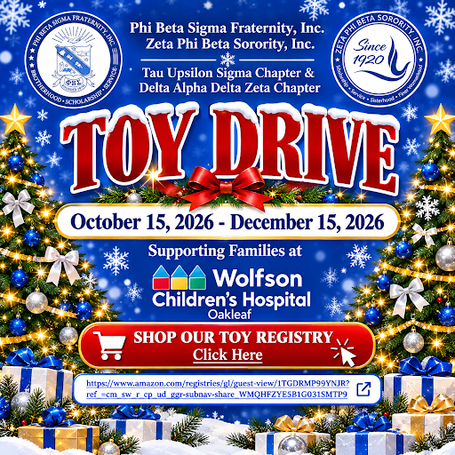
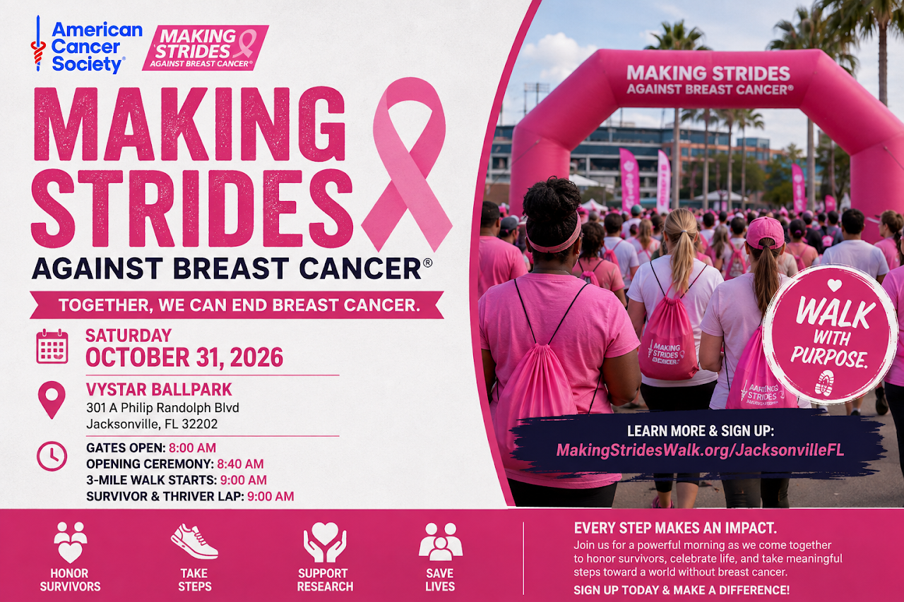
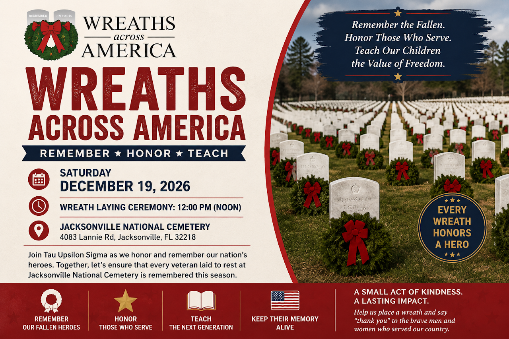
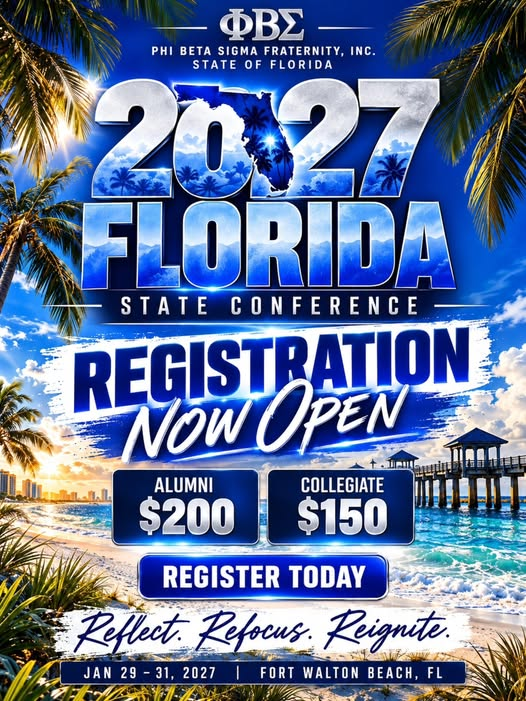
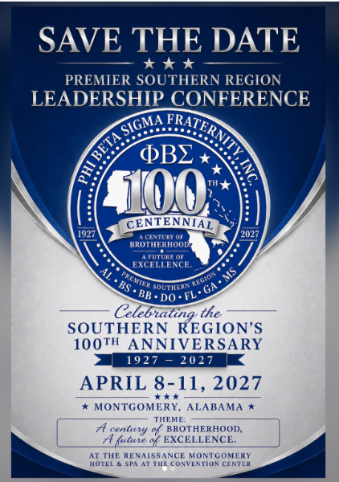
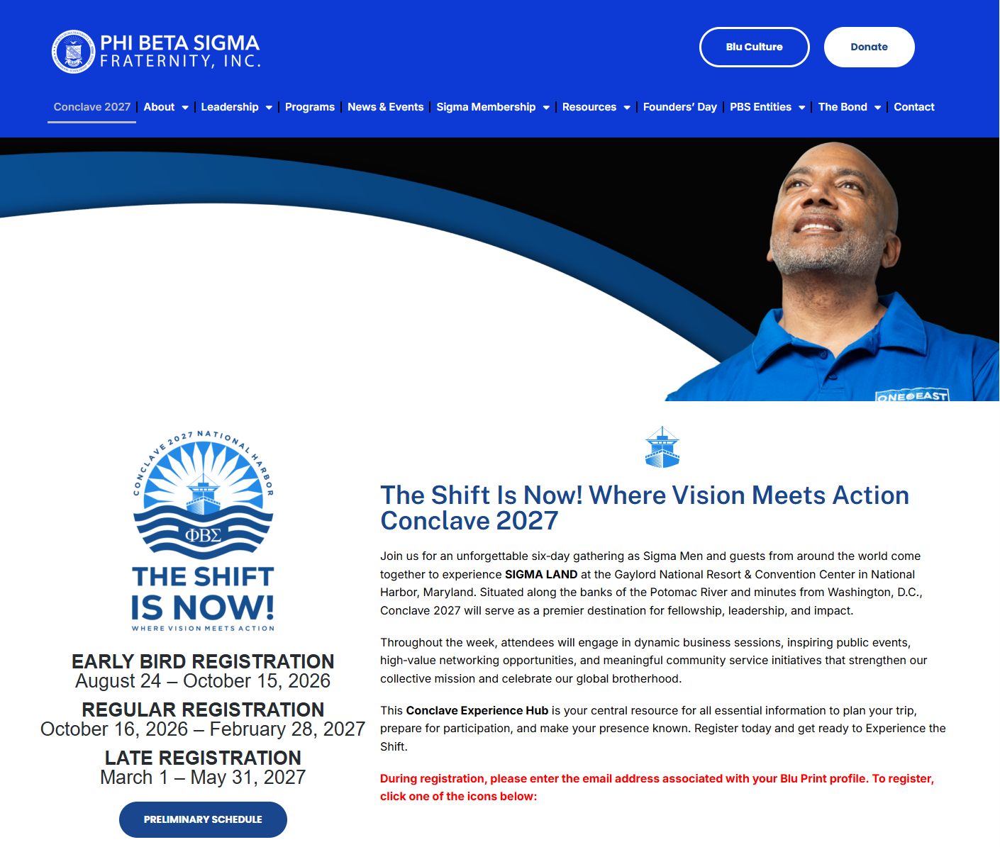

Upcoming Events
Join the Tau Upsilon Sigma Chapter of Phi Beta Sigma Fraternity, Inc. at upcoming programs, service initiatives, and community events throughout the geographical area of Clay County, Florida and surrounding areas.

2026 Holiday Toy Drive
October 15 – December 15, 2026
Phi Beta Sigma Fraternity, Inc. – Tau Upsilon Sigma Chapter and Zeta Phi Beta Sorority, Inc. – Delta Alpha Delta Zeta Chapter are joining together to spread holiday cheer through our 2026 Holiday Toy Drive, supporting families at Wolfson Children's Hospital Oakleaf. Help bring smiles to children and families this holiday season—every gift makes a difference.
How to participate: Shop the Amazon Toy Registry to support the drive.
SHOP THE TOY REGISTRY
Making Strides Against
Breast Cancer Walk
October 31, 2026 | Gates Open 8:00 AM | Walk 9:00 AM
The Tau Upsilon Sigma Chapter of Phi Beta Sigma Fraternity, Inc. will join the American Cancer Society and the First Coast community for the Making Strides Against Breast Cancer Walk at VyStar Ballpark. Join the brothers as we walk to honor survivors, support those impacted by breast cancer, and help raise awareness in the fight against the disease.
Location: VyStar Ballpark • 301 A Philip Randolph Blvd • Jacksonville, FL 32202
VISIT OFFICIAL EVENT PAGE
Sunrise Sigma Walk
November 7, 2026 | 6:30 AM
Join the brothers of Tau Upsilon Sigma for an early morning walk along Jacksonville Beach, bringing together fellowship, wellness, and brotherhood as the day begins.
Location: Jacksonville Beach Pier • 601 Oceanfront N • Jacksonville Beach, FL 32250
Point of Contact: alewis@floridasigmas.com
REGISTER FOR SUNRISE SIGMA WALK
Wreaths Across America
December 19, 2026 | Wreath Laying Ceremony: 12:00 PM
The Tau Upsilon Sigma Chapter of Phi Beta Sigma Fraternity, Inc. will join volunteers at Hardage-Giddens Holly Hill Funeral Home & Memorial Park for Wreaths Across America, honoring the service and sacrifice of our nation's veterans. The brothers will help place remembrance wreaths on veterans' graves as part of the national mission to Remember the fallen, Honor those who serve, and Teach the next generation the value of freedom.
Location: Hardage-Giddens Holly Hill Funeral Home & Memorial Park • 3601 Old Jennings Road, Middleburg, FL 32068
GET DIRECTIONS • Parking is limited; follow event signs and parking attendants.
VISIT OFFICIAL EVENT PAGE
2027 Florida State Conference
January 29–31, 2027 | Fort Walton Beach, Florida
Join brothers from across Florida for the 2027 Phi Beta Sigma State Conference. Under the theme Reflect. Refocus. Reignite., brothers will gather in fellowship and continue to move Florida Sigma forward.
Registration: Alumni $200 • Collegiate $150
REGISTER FOR STATE CONFERENCE
2027 Southern Region Centennial Leadership Conference
April 8–11, 2027 | Montgomery, Alabama
Join brothers from across the Premier Southern Region in celebrating 100 years of Brotherhood, Scholarship, and Service at the Centennial Leadership Conference.
Theme: A Century of Brotherhood, A Future of Excellence.
Save the Date: Registration details have not yet been announced.
VISIT SOUTHERN REGION WEBSITE
Phi Beta Sigma Conclave 2027 — The Shift Is Now!
July 26 – August 1, 2027 | National Harbor, Maryland
Brothers from around the world will gather for Phi Beta Sigma's biennial national Conclave in the Washington, D.C. area, returning to the region where our fraternity was founded. Experience fellowship, leadership, community service, and an unforgettable celebration of brotherhood under the theme The Shift Is Now!: When Vision Meets Action.
Venue: Gaylord National Resort & Convention Center • 201 Waterfront Street • National Harbor, MD 20745
Registration: Early Bird August 24 – October 15, 2026 • Regular October 16, 2026 – February 28, 2027 • Late March 1 – May 31, 2027.
View the official Conclave registration portal
CONCLAVE DETAILS & REGISTRATION